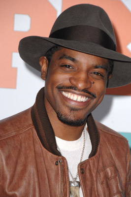
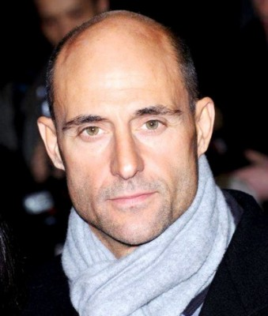
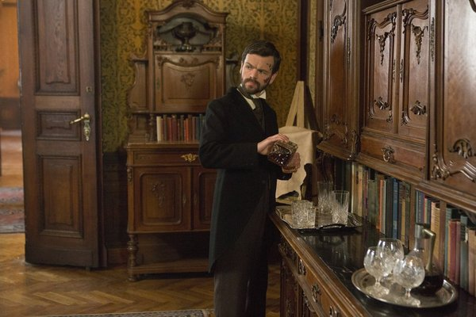
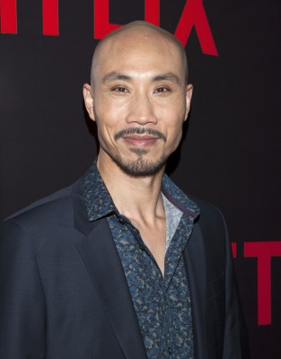
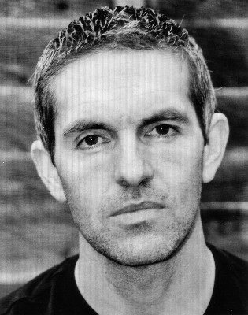
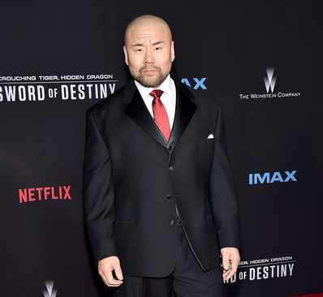

#354 Revolver


 IMDB-Wertung: 6.5 / 10
IMDB-Wertung: 6.5 / 10  Metascore: 25
Metascore: 25 
Die sieben Jahre Knast haben sich ausgezahlt für Jake Green. Dank versierter Zellengenossen ist er bei seiner Entlassung ein perfekter Zocker, dem es auch gleich gelingt, Gangsterboss Macha ordentlich auszunehmen. Ob das allerdings schlau war? Der finanziell äußerst lukrative Abend bringt Jake nämlich auf Machas Abschussliste. Denn der ist es keinesfalls gewohnt zu verlieren.
Jahr: 2005
Dauer: 111 Minuten
FSK: 16
Land: Frankreich Studio: Ascot Elite Home EntertainmentTonspuren: DTS - ,
Untertitel:
Auflösung: 1080p (1920×816) Größe: 10649 MB
Genre: Action, Krimi, Drama, Mystery, Thriller
Regisseur:  Guy Ritchie
Guy Ritchie
Drehbuch: Luc Besson, Guy Ritchie
Soundtrack: Nathaniel Méchaly
Darsteller:
 Jason Statham als Jake Green
Jason Statham als Jake Green Ray Liotta als Dorothy Macha
Ray Liotta als Dorothy Macha Vincent Pastore als Zach
Vincent Pastore als Zach-  André Benjamin als Avi
 Terence Maynard als French Paul
Terence Maynard als French Paul- Andrew Howard als Billy
-  Mark Strong als Sorter
 Francesca Annis als Lily Walker
Francesca Annis als Lily Walker- Mem Ferda als Macha's Goon
- Anjela Lauren Smith als Doreen
- Shend als Teddy, Billy's Bodyguard
-  Stephen Walters als Joe
-  Tom Wu als Lord John
- Ian Puleston-Davies als Eddie A
- Jimmy Flint als Eddie B
- Martin Herdman als Slim Biggins
 Togo Igawa als Fred
Togo Igawa als Fred- Ricky Grover als Hamish
- Benjamin Feitelson als Doug Finny
-  Louis Dempsey als Macha's Pit Boss Slick
- Mercedes Grower als Billy's Wife
 Sacha Bennett als Architect , uncredited
Sacha Bennett als Architect , uncredited- Habib Nasib Nader als Lily Walkers Security , uncredited
-  Woon Young Park als Bodyguard , uncredited
- Peter Rnic als Convict , uncredited
- Michael Thompson als Ste prisoner , uncredited
- Elana Binysh als Rachel
- Bill Moody als Al
- Vincent Riotta als Benny
- Brian Hibbard als Eddie C
- Bruce Wang als Fat Dan
- Tony Tang als Wong
- George Sweeney als Lou
- Tony Denham als Patrick
- Serge Soric als Rade
- Trevor Stuart als Mr. Horowitz
- Gary Tang als Tim
- Faruk Pruti als Ivan, Billy's Bodyguard
- Abbi Bashir als North African Man
- Evie Garratt als Old Lady
- Mario Woszcycki als Macha's Elevator Man
- Eddy Lemare als Macha's Doorman
- Kamay Lau als Waitress
- Jeff Rudom als Fat Man
 Hon Ping Tang als Lord John's Man
Hon Ping Tang als Lord John's Man- Brendon Burns als Electrician
- Joerg Stadler als Prisoner
- David Buchanan als Prisoner , uncredited
- Jasmine Lennard als (uncredited
- Del Mak als Lord John Security Man , uncredited
Datei: X:\2005(N-Z)\Revolver (2005, FSK16, 1920x816).mkv seit 18.02.2015
Festplatte: HD 2005(G-Z)-2006(A-Z)
 Es gibt insgesamt 50 Filme in der Gruppe '2005(N-Z)'
Es gibt insgesamt 50 Filme in der Gruppe '2005(N-Z)'